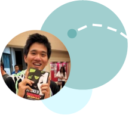

About
Because every personal website needs their own About Me page.

When I'm not shorting circuits, creating seg faults, or kerning two pixels too far to the left:
Bad Puns. Piano. Photography. Running. Reading. Karaoke.
IV Breeder. Super Smash. Mario Kart. Tetris tweaker. Quiz RPG.
Obsessions over bubble and milk tea, French horns with high range, and Victoria Justice.
Neopets is my guilty pleasure. Friday nights consist of getting drunk off sugar and raging against blue shells in Mario Kart.
Kill them with not just any kind of kindness. Unexpected kindness.
Try everything at least twice. Explore everywhere. Open your mind to what this universe has to offer!
Hai! My name is Kevin Hu, born and raised from the tiny state of Hawai'i on the island of O'ahu.
My passion lies in applying logic and critical thinking to creatively help others achieve their goals, from marketing to simply pursuing happiness. As I am studying for concurrent degrees in both Computer Engineering as well as Studio Art at the wonderful University of Hawai'i at Manoa, I've come so much closer to making this passion (if you haven't caught on, on this website we'll call this combination MAGIC) a reality as I graduate next semester in Fall 2014!
 Believe it or not, there is a science behind everything, even (or especially) in the arts! From the almost-obvious computer science required to code beautiful web pages and mobile apps to being able to direct others on how to make interesting art (to even making your audience do exactly what you want!), it's quite mind-blowing. With an engineering background, I am always striving to logically come up with innovative solutions that actually work.
Believe it or not, there is a science behind everything, even (or especially) in the arts! From the almost-obvious computer science required to code beautiful web pages and mobile apps to being able to direct others on how to make interesting art (to even making your audience do exactly what you want!), it's quite mind-blowing. With an engineering background, I am always striving to logically come up with innovative solutions that actually work.
When I'm not dealing with engineering or artsy things, I'm always striving to learn more about the world and how everything works. I also love just strengthening my creativity through various forms of non-traditional arts. From the best humor in the form of bad puns (hey, with a last name like Hu, what did you expect?), to learning Everyone's a Little Bit Racist on the piano, it never ends. On the occasion I do like to play some video games, but only a select few. Not those typical shooter games (unless if it's with a camera) or those games that share the same acronym as the most overused expression in chats, but those where I can be more creative. Super Smash Bros Brawl, Pokemon, Mario Kart, Tetris, and Quiz RPG (a mobile app trivia RPG) are my guilty pleasures at the moment, occasionally with some other Nintendo games. Outside of gaming, I'm trying to find the perfect balance between Yelping every single place I love to pig out at and running to get that natural runner's high. The rest of my free time is spent singing horrible at random karaoke places and learning from reading a good old book.
With so much happening in this world, there's no time to waste, no energy to hate. Enjoy every moment and open your heart out to what the world has to offer!
Feel free to contact me in any of the social media below, or check out the Contact page above for more options to contact me. From talking about careers to gaming to anything, really, feel free to make a friend!
As a student aspiring for two practically opposite degrees, it's only natural that I am constantly learning. Here I wish to share what has inspired me along the way.
Fiction

Don Quixote | Miguel de Cervantes

Wicked: The Life and Times of the Wicked Witch of the West | Gregory Maguire
Non-Fiction

Smashing UX Design | Jesmond Allen and James Chudley

Evil by Design | Chris Nodder

Ace the Programming Interview: 160 Questions and Answers for Success | Edward Guiness

Damn Good Advice (For People With Talent!) | George Lois

Outliers | Malcolm Gladwell

Thoughts on Design | Paul Rand

The Creative Habit | Twyla Tharp
Version 1.2: August 13 2014 - Updated About page with a fancy booklist and page anchors.
All projects content uploaded!
Version 1.1: August 8 2014 - Modification of responsive layout for mobile.
Miscellaneous section removed, sorry!
Version 1.0: June 15 2014 - Initial Completion of website for desktop.
Version 0.0: June 1 2014 - Conception of portfolio website.
Slideshow omitting need of opening images in new tabs.
Contact me for suggestions!